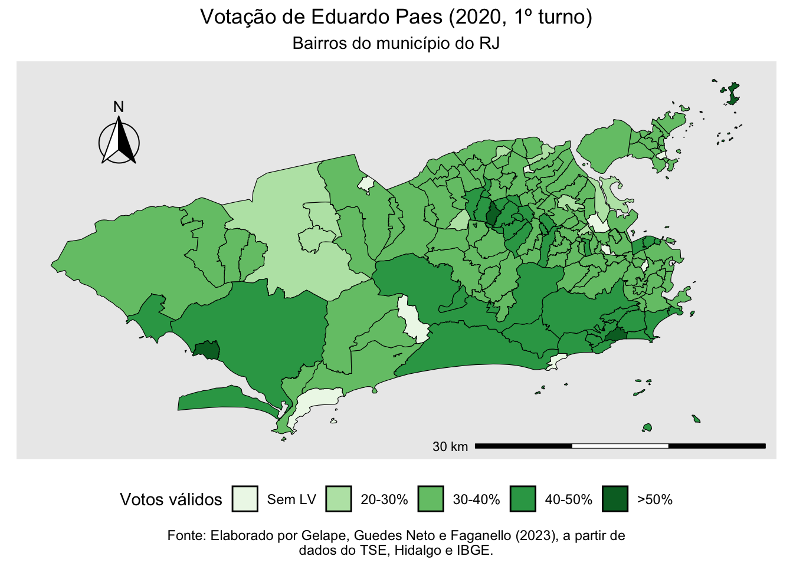

Parte 4 Atividades Extras
4.1 Marta Suplicy em 2000
Nosso primeiro passo é sempre carregar os pacotes que são relevantes para o nosso trabalho. A única novidade em relação aos exercícios anteriores é o pacote RColorBrewer. Já que queremos plotar mapas bonitos, ele nos auxília com uma série de paletas de cores adicionais.
library(dplyr)
library(tidyr)
library(sf)
library(ggplot2)
library(ggspatial)
library(RColorBrewer)Os procedimentos iniciais são muito parecidos com o que realizamos para as tarefas anteriores. Começamos baixando a base de dados que possui os resultados por local de votação na cidade de São Paulo no ano 2000 (nomeada lv2000). Além dela, também importaremos o mapa de distritos de São Paulo (mapa).
# Importa os dados de resultado por local de votação em SP
lv2000 <- readRDS("base/base2000_sp.rds")
# Importa o mapa de distritos de São Paulo
mapa <- readRDS("base/mapa_distritos_sp.rds")Agora identificaremos o total de votos por local de votação. Note que a base lv2000 do CEM/USP já contém os dados de votação dos candidatos a prefeito. Nela, as colunas com os dados de votação seguem o seguinte padrão: PF00_111. Neste padrão:
- PF indica votação para prefeito;
- o primeiro dígito depois de “_” indica o turno;
- os dois números seguintes indicam o número do prefeito.
A coluna com a votação da Marta Suplicy no primeiro turno, portanto, é PF00_113. Para mais informações, consulte a documentação preparada pelos pesquisadores do CEM/USP.
# Obtenção do total de votos validos para prefeito por local de votação
votos_pref <- lv2000 |>
# Remove as colunas de geometria espacial
st_drop_geometry() |>
# Seleciona as colunas 'ID' e um intervalo de colunas de 'PF00_111' a 'PF00_156'
select(ID, PF00_111:PF00_156) |>
# Transforma as colunas de votos em linhas
pivot_longer(cols = c(PF00_111:PF00_156),
names_to = "coluna",
values_to = "voto") |>
# Substitui valores NA em 'voto' por 0
mutate(voto = replace_na(voto, 0)) |>
# Cria uma nova coluna 'voto_total' que é a soma dos votos por 'ID'
group_by(ID) |>
summarise(voto_total = sum(voto)) |>
ungroup()Nosso próximo passo, mais uma vez, é usar o comando left_join para integrar a base de dados de locais de votação (lv2000) com a de votos para prefeita (votos_pref) e selecionar apenas os votos da candidata Marta Suplicy. Chamaremos esta nova base de lv2000_2.
# Cria um novo tibble 'lv2000_2' a partir do 'lv2000'
lv2000_2 <- lv2000 |>
# Combina 'lv2000' com 'votos_pref' usando um leftjoin pelo 'ID'
left_join(votos_pref, by = "ID") |>
# Seleciona as colunas 'ID', 'PF00_113' e 'voto_total'
select(ID, PF00_113, voto_total) Agora integraremos a base de LV (ponto) com seus respectivos distritos (polígonos). Para tanto, utilizamos o comando de spatial join (st_join).
mapa_unificado <- st_join(mapa, lv2000_2) Por que mapa_unificado agora tem 1.135 linhas e não 1.134? Dica: investigue o distrito (em mapa) de Marsilac no extremo sul da cidade.
Nosso próximo passo será agrupar as votações da candidata por distrito e, como fizemos anteriormente, calcular a proporção de votos para cada uma destas localidades.
# Usa o tibble 'mapa_unificado'
mapa_final <- mapa_unificado |>
# Calcula a soma total dos votos para 'Marta' e no total em cada distrito
group_by(name_district) |>
summarise(marta = sum(PF00_113),
voto_total = sum(voto_total)) |>
ungroup() |>
# Calcula a porcentagem de votos para 'Marta' e arredonda para 1 casa decimal
mutate(porc = round(marta/voto_total*100, 1)) Agora precisamos decidir como vamos agrupar os dados para preparar a legenda do nosso gráfico. Ela indica como será feita a escala de cores para o nosso gráfico. Uma dica é retornar a discussão sobre Cortes de Jenks que realizamos no exercício anterior. Para este novo mapa, utilizaremos as seguintes categorias: “25-31%”, “31-37%”, “37-43%”, e “43-49%”.
# Cria uma variavel categorica para melhorar a visualizacao
mapa_final <- mutate(
mapa_final,
voto_cat = case_when(
is.na(porc) ~ "Sem LV",
TRUE ~ cut(porc,
seq(25, 49, 6),
labels = c("25-31%", "31-37%",
"37-43%", "43-49%"))))Por fim, utilizaremos todos estes dados para produzir o gráfico final com a distribuição de votos (proporcional por distrito) da Marta Suplicy na eleição para prefeita no ano 2000.
# Monta uma string de cores.
cores <- brewer.pal(4, "OrRd")
cores <- c(cores, "#999999")
# Inicia o ggplot
mapa_final |>
ggplot() +
# Usa uma camada de sf
geom_sf(aes(fill = voto_cat), color = "black", size = 0.1) +
# Retira o datum
theme_void() +
# Coloca o fill na paleta de verdes
scale_fill_manual(values = cores) +
# Adicionar titulo, subtitulo e legenda
labs(
title = "Votação de Marta Suplicy (2000, 1º turno)",
subtitle = "Distritos do município de São Paulo",
caption = "Fonte: Elaborado a partir de\ndados do CEM e IBGE.") +
# Adiciona escala
ggspatial::annotation_scale(
location = "br", width_hint = 0.4, line_width = 0.5,
height = unit(0.1,"cm")) +
# Coloca titulo na legenda
guides(fill = guide_legend(title = "Votos válidos")) +
# Ajusta elementos do tema do ggplot
theme(
# Posicao e direcao da legenda
legend.position = "bottom",
legend.direction = "horizontal",
# Centralizacao de alguns elementos textuais
plot.title = element_text(hjust = 0.5),
plot.subtitle = element_text(hjust = 0.5),
plot.caption = element_text(hjust = 0.5)) +
# Adiciona rosa-dos-ventos
ggspatial::annotation_north_arrow(
location = "br", which_north = "true",
style = north_arrow_fancy_orienteering(),
# Ajusta a altura da rosa-dos-ventos (pode exigir tentativa e erro)
pad_x = unit(0.5, "cm"), pad_y = unit(1, "cm")) 
4.2 Eduardo Paes em 2020
Para o caso do Rio de Janeiro, utilizaremos alguns pacotes que não foram necessários para os exercícios anteriores. Descrevemos cada um deles brevemente no código apresentado abaixo.
library(here) # Parecido com o setwd() mas com funções adicionais para referenciar arquivos
library(dplyr) # Gramática para manipular dados
library(readr) # Pacote para abrir bases, por ex., em CSV
library(stringr) # Facilita a manipulação de variáveis "string"
library(janitor) # Auxilia na limpeza dos dados
library(sf) # Manipulação de dados espaciais
library(geobr) # Pacote com mapas do Brasil
library(ggplot2) # Pacote para elaboração de gráficos
library(ggspatial) # Complementar ao ggplot2, com foco em mapasComo nos outros exercícios, vamos importar a base com (1) locais de votação do município do Rio de Janeiro em 2020, (2) os dados eleitorais do candidato a prefeitura Eduardo Paes (PSD) e (3) a localização dos setores censitários da cidade (para extrair a informação dos seus bairros, posteriormente).
# Leitura da base dos locais de votação no Rio em 2020
lvrj <- readRDS("base/lvrj2020.rds")
# Leitura da base com dados eleitorais de Eduardo Paes
paes2020 <- readRDS("base/base2020_rj.rds")
# Lendo o mapa de setores censitários do Rio de Janeiro
rj_sc <- readRDS("base/mapa_setores_rj.rds")Neste próximo bloco de código, vamos unir as informações de bairro “corretas” ao banco de dados de locais de votação. Lembre-se que, como discutimos anteriormente, as zonas eleitorais do TRE não são equivalentes à distribuição espacial dos setores censitários. Além disso, não se esqueça de informar que o CRS é do SIRGAS 2000 (código 4674).
# Transforma lvrj em um objeto espacial
lvrj_espacial <- lvrj |>
# Remove os NA, se houver (importante checar quantos NA, se for o caso)
filter(!is.na(long)) |>
# Objeto com crs = 4674 (Sirgas2000)
st_as_sf(coords = c("long", "lat"), crs = 4674)Nosso próximo passo é utilizar o comando st_join, como nos exemplos anteriores, para integrar os dados espaciais de lvrj_espacial e rj_sc.
# Faz o spatial join
lvrj_espacial <- st_join(lvrj_espacial, rj_sc)Antes de prosseguir, vamos verificar se o número de NAs (dados ausentes) é muito grande. O que encontraremos, como você perceberá, é que não existe nenhum “missing” nas 1.422 linhas da tabela para a coluna NM_MUNICIP. Ou seja, todos os locais de votação (pontos) encontraram um setor censitário (polígono) correspondente.
# Checa número de NAs (0 de 1.422)
table(is.na(lvrj_espacial$NM_MUNICIP))##
## FALSE
## 1422Agora já podemos agregar os votos por bairro do município do Rio de Janeiro. Começamos pela remoção dos atributos espaciais do banco de locais de votação e, logo em seguida, integramos as bases voto por seção com os locais de votação atualizados.
# Remove atributos espaciais do banco de LVs
lvrj <- st_drop_geometry(lvrj_espacial)
# Unir os bancos de voto-secao com os de LVs atualizados
paes2020_lv <- paes2020 |>
# Agrupa os votos do Paes por LV
group_by(dt_geracao, ano_eleicao, nr_turno, sg_uf,
nm_municipio, cd_municipio, nr_zona, nr_local_votacao,
ds_cargo, nm_votavel) |>
summarise(qt_votos = sum(qt_votos),
votos_validos_lv = sum(votos_validos_secao)) |>
ungroup() |>
# Junta com o banco de LV
left_join(lvrj,
by = c("cd_municipio" = "cd_localidade_tse",
"nr_zona",
"nr_local_votacao" = "nr_locvot",
"ano_eleicao" = "ano")) Isto nos permitirá agrupar os votos do candidato Eduardo Paes por bairro. Lembramos, mais uma vez, que isto é possível já que temos o endereço de cada local de votação e sua geolocalização.
# Agrupa os votos do Paes por bairro
paes2020_bairro <- paes2020_lv |>
group_by(NM_BAIRRO, CD_GEOCODB) |>
summarise(qt_votos = sum(qt_votos),
votos_validos_bairro = sum(votos_validos_lv)) |>
ungroup()Com base nestes dados, produzimos a proporção de votos que o candidato obteve em cada bairro. Pelo comando summary, verificamos que a média de Paes por bairro do Rio foi de 37,25%, sendo que não obteve mais que 51,86% em nenhum bairro no primeiro turno de 2020.
# Preparar o banco de dados
paes2020_bairro <- paes2020_bairro |>
mutate(percentual = (qt_votos/votos_validos_bairro)*100)
# Algumas estatisticas descritivas do percentual
summary(paes2020_bairro$percentual)## Min. 1st Qu. Median Mean 3rd Qu. Max.
## 21.40 33.47 37.40 37.25 40.11 51.86Nosso próximo passo será utilizar os mapas do pacote geobr (isto é, seu arquivo shp) para gerar um mapa de bairros mais “limpo” do que o que temos e integrar seus dados ao nosso tibble original.
Os dados do geobr estão com uma duplicação de bairros. No caso, o mesmo bairro (Marechal Hermes) aparece em duas linhas do objeto espacial, sendo uma tendo como subdistrito Jacarepaguá e outra como Madureira. Para eliminar uma dessas linhas do banco (que duplicaria os votos nessa região ao fazermos o join), consultamos um mapa oficial de bairros do município do Rio de Janeiro e verificamos que Marechal Hermes está na Região Administrativa de Madureira, portanto vamos excluir do objeto a linha que se refere a Jacarepaguá.
# Abre um shp de bairros mais "limpo"
rj_bairros <- read_neighborhood(showProgress = F) |>
# Filtra somente o municipio do RJ
filter(name_muni == "Rio De Janeiro") |>
# Cria coluna para identificar qual linha deve ser removida e a remove
mutate(remover = ifelse(name_neighborhood == "Marechal Hermes" &
name_subdistrict == "Jacarepaguá", T, F)) |>
filter(!remover)
# Passa a info de votos pro shp
rj_bairros_paes <- rj_bairros |>
# Faremos o join somente por codigo do bairro, pois caso o fizessemos com o
# nome do bairro, teriamos alguns casos sem combinacao exata, e produziriamos
# falsos negativos (NA que nao sao NA na prática)
left_join(paes2020_bairro,
by = c("code_neighborhood" = "CD_GEOCODB"))Por fim, utilizamos estas informações para gerar o mapa com uma escala de percentuais que varia de 10 em 10 p.p. como apresentado abaixo na sequência do comando mutate. Note também que as funções do ggplot estão comentadas para te auxiliar na customização dos mapas.
# A partir do objeto espacial
rj_bairros_paes |>
# Cria uma variavel categoria e preenche os niveis, que serao a legenda
mutate(
categoria = case_when(
is.na(percentual) ~ "Sem LV",
percentual > 20 & percentual <= 30 ~ "20-30%",
percentual > 30 & percentual <= 40 ~ "30-40%",
percentual > 40 & percentual <= 50 ~ "40-50%",
percentual > 50 ~ ">50%"),
categoria = factor(
categoria,
levels = c("Sem LV", "20-30%", "30-40%", "40-50%", ">50%"))) |>
# Inicia o ggplot
ggplot() +
# Usa uma camada de sf
geom_sf(aes(fill = categoria), color = "black", size = 0.1) +
# Retira o datum
coord_sf(datum = NA) +
# Coloca o fill na paleta de verdes
scale_fill_brewer(palette = "Greens") +
# Adicionar titulo, subtitulo e legenda
labs(
title = "Votação de Eduardo Paes (2020, 1º turno)",
subtitle = "Bairros do município do RJ",
caption = "Fonte: Elaborado por Gelape, Guedes Neto e Faganello (2023), a partir de\ndados do TSE, Hidalgo e IBGE.") +
# Adiciona escala
ggspatial::annotation_scale(
location = "br", width_hint = 0.4, line_width = 0.5,
height = unit(0.1,"cm")) +
# Coloca titulo na legenda
guides(fill = guide_legend(title = "Votos válidos")) +
# Ajusta elementos do tema do ggplot
theme(
# Posicao e direcao da legenda
legend.position = "bottom",
legend.direction = "horizontal",
# Centralizacao de alguns elementos textuais
plot.title = element_text(hjust = 0.5),
plot.subtitle = element_text(hjust = 0.5),
plot.caption = element_text(hjust = 0.5)) +
# Adiciona rosa-dos-ventos
ggspatial::annotation_north_arrow(
location = "br", which_north = "true",
style = north_arrow_fancy_orienteering(),
# Ajusta a altura da rosa-dos-ventos (pode exigir tentativa e erro)
pad_x = unit(14, "cm"), pad_y = unit(6.5, "cm")) 